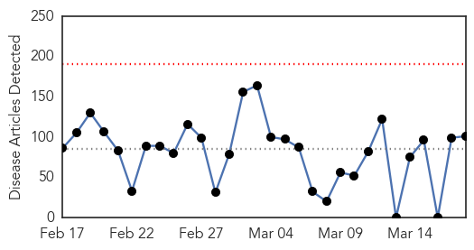
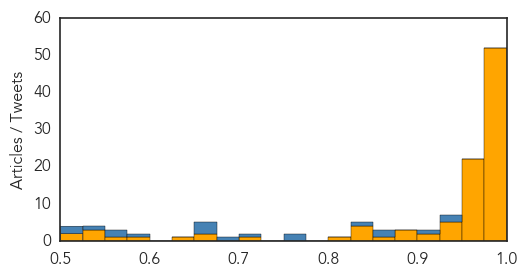
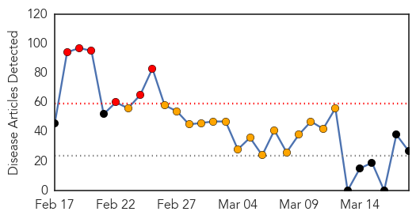
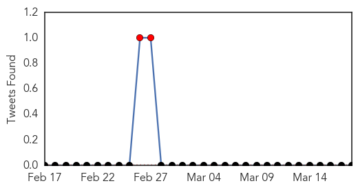
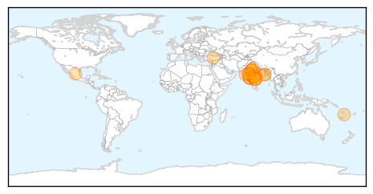
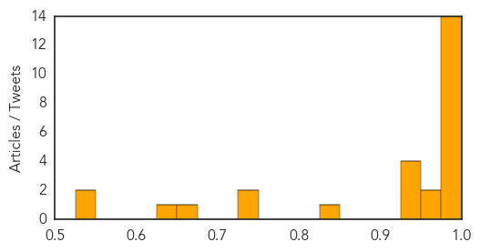

Ebola
30-Day Web Trend
0 alerts, 0 warnings

30-Day Twitter Trend
1 alerts, 0 warnings

Article Locations

Article Confidences
Top Articles:
- 1.000
- American who contracted Ebola now in critical condition
- 1.000
- US officials defend Ebola response; nurse moved
- 1.000
- Plymouth University research could prevent fresh outbreaks of Ebola
- 1.000
- Liberia: WHO Confirms No Ebola Case in Liberia in Two Weeks
- 1.000
- IN-DEPTH RADIO :: UPDATE: Patient tests negative for Ebola at Sunnybrook :: News
- 1.000
- Patient at Toronto hospital tests negative for Ebola
- 1.000
- Guinea sees spike in new Ebola cases, including 3 infected doctors
- 1.000
- 10 US charity staff to leave Sierra Leone amid Ebola scare
- 1.000
- Latest: 15 American aid workers have returned to U.S. soil for Ebola monitoring
- 1.000
- 4 more aid workers flown back to US for Ebola monitoring
- 0.999
- Ebola diaries: First signals - March 2014
- 0.999
- Ebola could make comeback as spotlight on it fades
- 0.999
- Bill Gates: The Ebola Crisis Was Terrible. But Next Time Could Be Much Worse.
- 0.999
- Ebola: 4 more aid workers flown back to US for monitoring
- 0.999
- The Next Epidemic — Lessons from Ebola — NEJM
- 0.999
- Guinea Ebola cases rise; three doctors infected
- 0.999
- Four more aid workers flown back to U.S. for Ebola monitoring
- 0.999
- The Ebola Epidemic Isn’t Only Threatening Guineans’ Health · Global Voices
- 0.998
- Liberians Worry Ebola Could Return From Guinea, Sierra Leone
- 0.998
- Sierra Leone plans another shutdown to stop Ebola's spread
- 0.998
- Kenya : Guinea Ebola cases rise, three doctors infected
- 0.998
- Violence against women rises in Ebola-hit nations: ministers
- 0.997
- Sunnybrook investigating possible Ebola case
- 0.996
- 4 more aid workers flown back to U.S. for Ebola monitoring
- 0.995
- Health workers returning from Ebola-hit courtiers face stigma-Red Cross
- 0.994
- Gambia holds simulation exercise on Ebola preparedness
- 0.993
- African tourism acts to shake off Ebola stigma
- 0.993
- Four PIH Clinicians Returned to United States for Monitoring
- 0.991
- Aid workers flown home for Ebola monitoring
- 0.990
- Patients Being Monitored for Ebola in Amarillo
- 0.988
- UPDATE: Two separate public health concerns surface in Amarillo
- 0.982
- Americans exposed to Ebola patient return from Africa for monito
- 0.982
- An American aid worker with Ebola receives speedy care, while a Sierra Leonean colleague is 'left behind'
- 0.980
- Robert Plant hits Las Vegas May 28 with the Sensational Space Shifters
- 0.980
- Medical marijuana for dogs and cats? Nevada lawmaker says yes
- 0.980
- Woman bites robber who stole her purse
- 0.980
- Police: Elkton man charged as drug kingpin
- 0.980
- Woman recounts fighting off attacker in robbery
- 0.980
- Baltimore Ravens RB Pierce charged with drunken driving
- 0.980
- With no ‘eraser’ Obekpa, San Diego St. plans to attack the paint
- 0.980
- Two reasons why Dayton is a safe bet against Boise State
- 0.980
- Detectives release photos of shooting suspect
- 0.980
- 'Egg Crack Challenge' raises money for diabetes
- 0.980
- American hoops star drinks up her millions in Russia
- 0.980
- Hazing victims to testify in support of tougher penalties
- 0.980
- Financial Fraud Scheme in Hollywood
- 0.980
- Allow adjuncts to unionize
- 0.980
- Baltimore police: 1 person stabbed, seriously hurt at Morgan State University in Maryland
- 0.980
- Baltimore restaurant sales drop amid growth almost everywhere else
- 0.980
- Live-streaming apps dominate buzz at SXSW; Kimmel begins Austin shows
Showing top 50 articles...
Top Tweets:
- 0.983
- Guinea Ebola cases rise, three doctors infected - Fox News http://t.co/sZPAtJCPKX ebola EVD
- 0.968
- Ebola diaries: First signals - March 2014 - World Health Organization (press release) http://t.co/XOlKZRPEs7 ebola EVD
- 0.946
- Monday marks 1 yr since declared an Ebola outbreak in W Africa. The outbreak remains today. EndEbolaNow KeepFighting WeCanFightThis
- 0.944
- 852 healthcare workers have contracted Ebola in 3 outbreak countries - 2x more cases than largest prior outbreak. 492 HCWs have died. 2/2
- 0.933
- From Fearful to Fearless: Survivor Tejanie Golafaley Goes From Ebola Denier to Ebola Fighter https://t.co/VGRoihvgwg
- 0.920
- Sierra Leone plans another three-day, countrywide shutdown to stop Ebola's ... - U.S. News & World Report http://t.co/OyU5tDKDCp ebola EVD
- 0.918
- Liberians Worry Ebola Could Return From Guinea, Sierra Leone - Voice of America http://t.co/51Ih9EAtEd ebola EVD
- 0.913
- RT: Bill Gates: Time to make a 'war game' for infectious disease http://t.co/tnZpAEVHJB ebola virus health infection ht…
- 0.903
- Guinea Ebola cases rise, three doctors infected:... http://t.co/rpdFNJYL4D
- 0.903
- Guinea Ebola cases rise, three doctors infected http://t.co/Xq19tA6L4n Africaagainstebola @EbolaAlert @JulieGichuru
- 0.901
- Une infection par le virus Ebola sur cinq touche un enfant http://t.co/gbmwJYxuoa via
- 0.875
- Ebola Update: 24,666 confirmed, probable and suspected cases reported in 3 most affected countries, with 10,179 deaths. EbolaResponse
- 0.873
- RT: Guinea reported 95 confirmed Ebola cases last week, highest number this year. This outbreak is still far from over. http://t.c…
- 0.838
- Sierra Leone: How Ebola Fools Even the Experts - http://t.co/FMQyohd10H http://t.co/acci6T7hLC ebola EVD
- 0.836
- Patient suspected of having Ebola treated at Sunnybrook - Toronto Star http://t.co/R5W4fLe8cL ebola EVD
- 0.810
- The Ebola outbreak in Liberia, and SierraLeone is clearly not over yet. Africaagainstebola http://t.co/FTNQj6N8r3
- 0.809
- Ebola Survivor Finds New Life at ADRA - Adventist Review http://t.co/QmBu8Eo2zk ebola EVD
- 0.780
- Three doctors infected with Ebola in Guinea amid new cluster of cases http://t.co/8faU8u3YtJ
- 0.773
- FDA panel to discuss Ebola vaccine development in May - Reuters http://t.co/Vb7jpjiKnm ebola EVD
- 0.766
- Care Differs for American and African With Ebola http://t.co/8qkQiWck5A
- 0.690
- A pharmacist's journey through the Ebola epidemic http://t.co/nAwmrh3raS
- 0.687
- La Banquemondiale soutient la pêche en Mauritanie et en Guinée, post-Ebola http://t.co/PjTG2mHHaT via
- 0.680
- What is the African Union Support to Ebola Outbreak in W.A(ASEOWA) role?.http://t.co/8Fx1iIU2e3 Africaagainstebola @_AfricanUnion
- 0.673
- RT: PHEEpiConf, starting today, includes presentations on Ebola & flu to genomic sequencing & antimicrobial resistance http://t.…
- 0.673
- RT: 14 new Ebola cases confirmed in SierraLeone today. 8 from Kambia district on border with Guinea, Freetown & environs 4, …
- 0.673
- RT: 14 new Ebola cases confirmed in SierraLeone today. 8 from Kambia district on border with Guinea, Freetown & environs 4, …
- 0.673
- Worry Ebola Could Return From Guinea, Sierra Leone http://t.co/mKnG3a7g9h
- 0.659
- Today's news pouch on avianflu avianinfluenza Ebola EbolaResponse MERS is here: http://t.co/yl2drsCfpN
- 0.655
- Healthcare workers continue to be infected with Ebola in West Africa. 11 more reported in the latest update http://t.co/37NoDbZXvM 1/2
- 0.631
- Bill Gates: The Ebola Crisis Was Terrible. But Next Time Could Be Much Worse. - New York Times http://t.co/crYLyk4mqQ ebola EVD
- 0.614
- This outbreak always looked a little strange to me Dr Formenty looking back to early days of Ebola in W. Africa http://t.co/6ltJmTQf9m
- 0.604
- New clinical trial could help Ebola patients treated in Omaha - KETV Omaha http://t.co/MrTLb3jJot ebola EVD
- 0.594
- It's Now 16 Americans Coming Back From the Ebola Zone - http://t.co/FMQyohd10H http://t.co/w8JZDyKxwZ ebola EVD
- 0.594
- It's Now 16 Americans Coming Back From the Ebola Zone - http://t.co/FMQyohd10H http://t.co/jNMeYpNFuF ebola EVD
- 0.573
- EarlyWarning for Ebola: Strengthening Africa's Capacity to Anticipate Risk of Outbreaks http://t.co/huPO6eELsu
- 0.520
- RT: This week's Ebola situation report is now available at: http://t.co/dCnK5G7ePx…
Swine Flu
30-Day Web Trend
6 alerts, 16 warnings

30-Day Twitter Trend
7 alerts, 0 warnings

Article Locations
Article Confidences
Top Articles:
- 1.000
- Death toll due to swine flu rises to 1809, but cases start reducing
- 0.999
- Swine flu in India: 27,886 people infected with the H1N1 virus
- 0.998
- Number of victims of swine flu increases to 3 in Turkey
- 0.998
- H1N1 claims 3 more, toll touches 400
- 0.994
- Swine Flu Deaths Cross 1,800, Cases May Dip in Next 2 Weeks
- 0.994
- Swine flu claims 3 more lives in Delhi, toll reaches 9
- 0.993
- Swine flu deaths cross 1,800 across country
- 0.991
- Swine flu toll touches 400 mark in Gujarat
- 0.991
- 2,083 positive swine flu cases in Telangana, toll reaches 74
- 0.990
- Mexico's Flu Death Toll Rise Terrifies World
- 0.988
- Swine flu toll in Rajasthan now 397
- 0.986
- Swine flu Death toll Reaches 397 and 6,226 Cases
- 0.986
- Pregnant H1N1 patient delivers baby, dies later
- 0.977
- One more swine flu death in Telangana, toll 74
- 0.969
- Two more swine flu deaths in 48 hours
- 0.969
- Woman dies of H1N1, toll up to 12
- 0.942
- Bengal swine flu toll mounts to 23
- 0.941
- Gautam Deb on ventilator
- 0.935
- Contagion claims eight lives in state
- 0.926
- Bengal swine flu toll mounts to 23
- 0.829
- Maha seeks Rs 100 cr aid to tackle swine flu
- 0.737
- Swine flu scare may hit Rajasthan's tourism industry
- 0.736
- Swine flu scare may hit Rajasthan's tourism industry
- 0.664
- Swine flu scare may hit Rajasthan's tourism industry
- 0.626
- Health minister cautions govt doctors against prescription of propaganda drugs
- 0.533
- Americans now must apply for an Egypt visa before travel
- 0.533
- Americans now must apply for an Egypt visa before travel
Top Tweets:
-
No tweets found for Mar 18, 2015